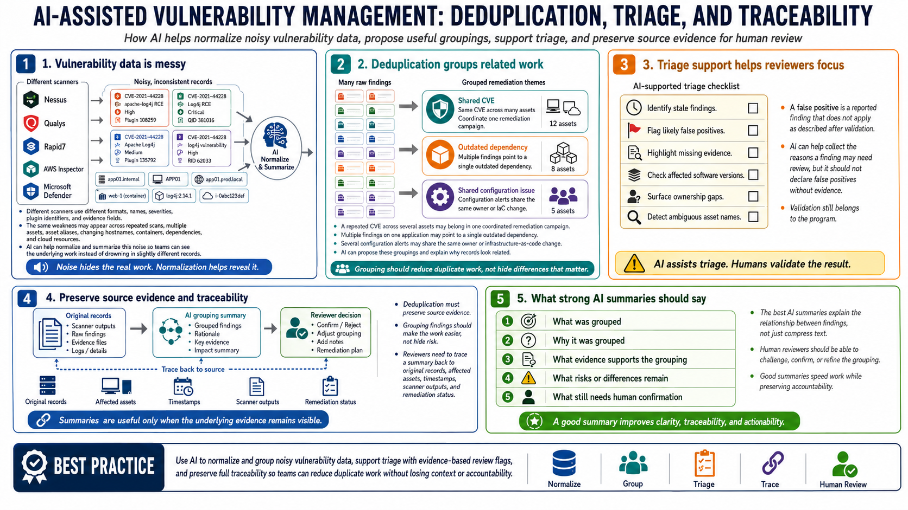

Normalization, Deduplication, and Triage Support
Connecting to LMS... Progress: in progress

Narration
Vulnerability data is messy. Different scanners use different formats, names, severities, plugin identifiers, and evidence fields. The same weakness may appear across repeated scans, multiple assets, asset aliases, changing hostnames, containers, dependencies, and cloud resources. AI can help normalize and summarize this noise so teams can see the underlying work instead of drowning in slightly different records.
Deduplication groups records that refer to the same underlying issue or remediation theme. A repeated CVE across several assets may belong in one coordinated remediation campaign. Multiple findings on one application may point to a single outdated dependency. Several configuration alerts may share the same owner or infrastructure-as-code change. AI can propose these groupings and explain why records look related.
Triage support also includes identifying stale findings, likely false positives, missing evidence, affected software versions, ownership gaps, and ambiguous asset names. A false positive is a reported finding that does not apply as described after validation. AI can help collect the reasons a finding may need review, but it should not declare false positives without evidence. Validation still belongs to the program.
Deduplication must preserve source evidence. Grouping findings should make the work easier, not hide risk. Reviewers need to trace a summary back to original records, affected assets, timestamps, scanner outputs, and remediation status. The best AI summaries say what was grouped, why it was grouped, what evidence supports the grouping, and what still needs human confirmation.